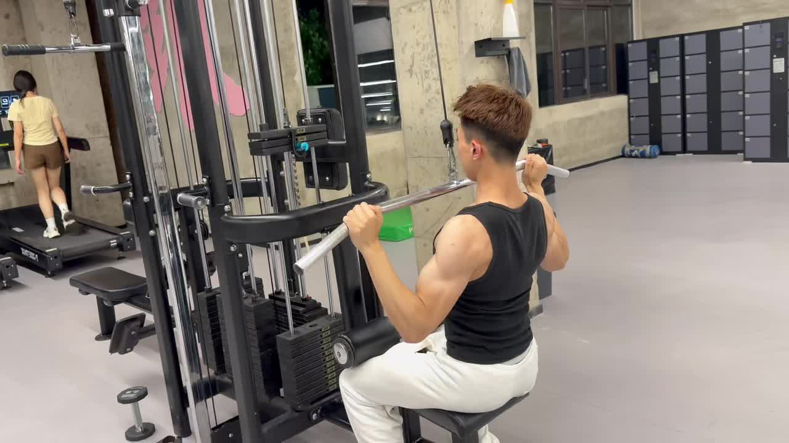
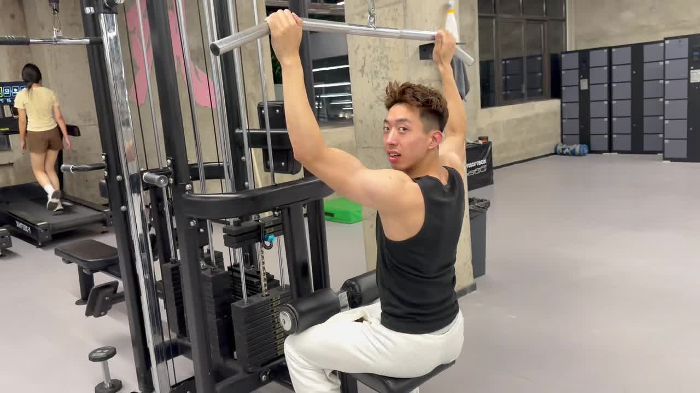
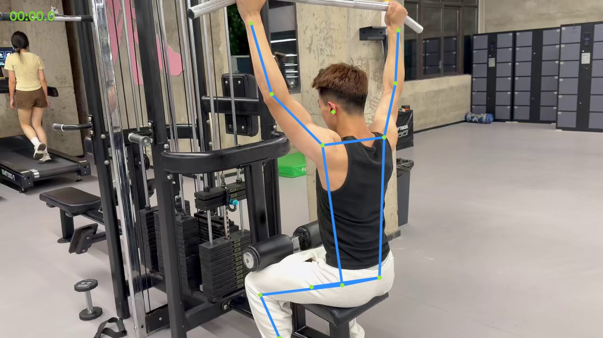

动作分析
高位下拉 · 后方机位

识别对象：前景高位下拉者✓ 全程跟踪稳定
18.57 秒
动作可评价
系统锁定了前景训练者，发现 2 个需要回看的时间点。
查看这个时刻的肘角和下拉位置。

高位下拉 · 后方机位

系统锁定了前景训练者，发现 2 个需要回看的时间点。
查看这个时刻的肘角和下拉位置。

前景训练者 · 已锁定“先保持当前重量，把每次下拉的末端位置做得更一致。”

这一时刻的肘角没有稳定到达参考范围。
点开对照骨骼线与动作原画面。
画面中检测到多个人物
系统按人物大小、位置与连续运动轨迹完成选择。

00:12.3点击查看原视频前后 1 秒与骨骼叠加。
系统没有切换到右后方经过的人。
LAT PULLDOWN · REAR VIEW
00:12.3 / 18.57可见侧肘角未稳定覆盖参考范围。
肘部向下位移幅度较小，建议结合原视频复看。
高位下拉 · 已完成分析
整体控制比较稳定。下面两处值得放慢看看，我已经把对应骨骼画面放在时间卡片里。
下拉末端略短，点开查看前后动作。
查看证据 →保持肘部继续向下，而不是只往后。
查看证据 →保持当前重量，在下拉末端停半秒，再有控制地回到顶部。